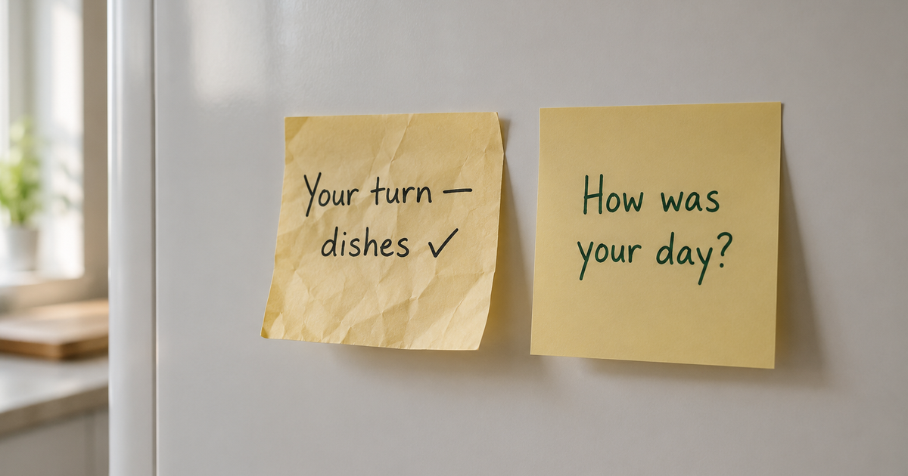

If you've been keeping score over the dishes, this one's a relief. A new study of 4,108 people finds that couples grow less happy after a baby mostly because they fight more and connect less — not because of who ends up doing more housework. The unfair chore split matters far less than it feels like it should.
The analysis, published in the Journal of Marriage and Family by sociologist Matthias Pollmann-Schult, followed thousands of German adults year after year from 2008 to 2022 through the country's long-running Family Panel. Of the 4,108 people tracked, 1,581 became parents during the study — so the same person's relationship could be watched before and after the baby. Satisfaction dropped for both mothers and fathers after the birth, a little more steeply for women, and stayed lower even six to thirteen years on.
When Pollmann-Schult looked for why, two culprits stood out: a rise in conflict and negativity, and a quieter loss of emotional intimacy and appreciation — the small stuff, like sharing how your day went and feeling noticed. The finding most parents won't expect is what didn't matter much. Yes, housework shifted onto mothers and stayed there. But that unequal split, and even feeling it was unfair, had no measurable effect on fathers' happiness and explained only about 6% of the drop for mothers — far less than the fighting and the fading warmth. One more quiet upside: both partners actually reported higher satisfaction while the mother was pregnant.
Worth being honest about the limits: this is correlational, and it's a German sample, where paid leave and childcare support are strong. The author notes that in countries with thinner support the declines are probably steeper. But the direction is clear — and it points at something you can actually do something about.
Keep readingDead bedroom after a baby: how to fix it without pressure · Lonely as a new dad? Why it happens and what helps · How relationships work — the crisis map

Co-founder of Regular. Writes about relationships, parenthood, and the science of how couples stay close after a baby.
About Regular — the relationship app for new dads, built by a small team of parents who needed it themselves. Small, science-backed moves with your partner, not big talks.